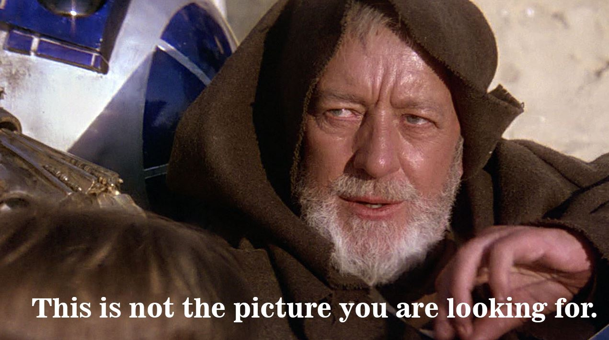
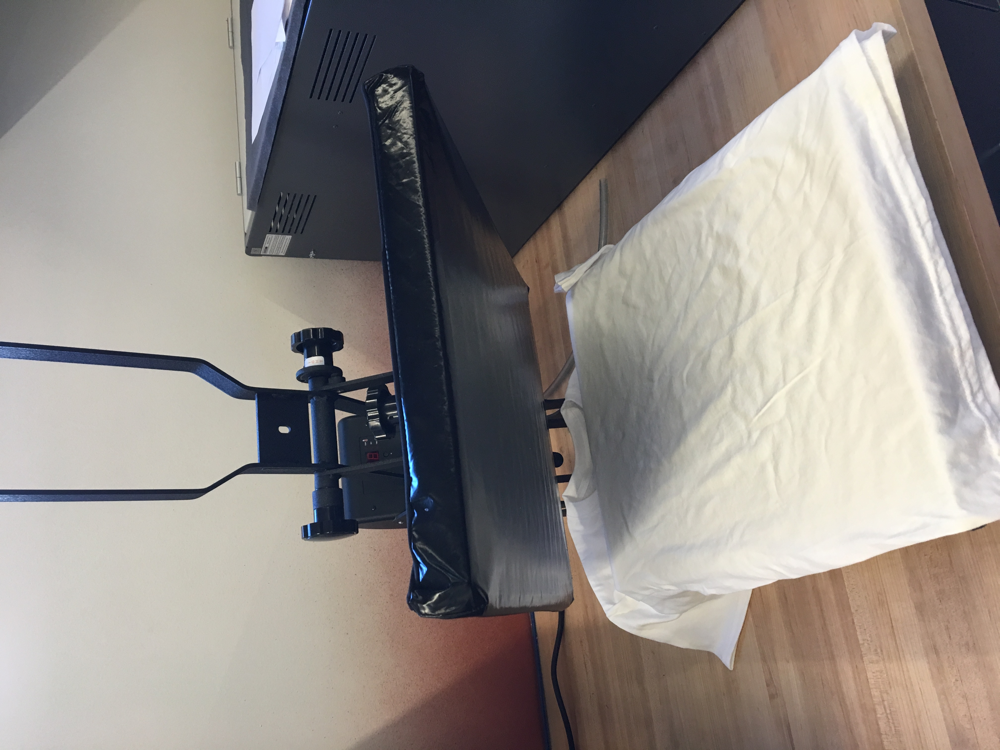
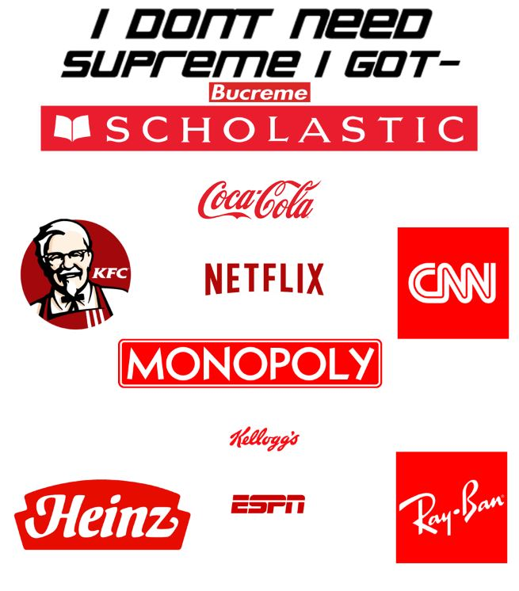
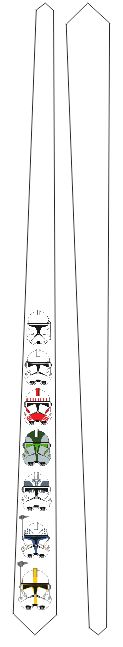
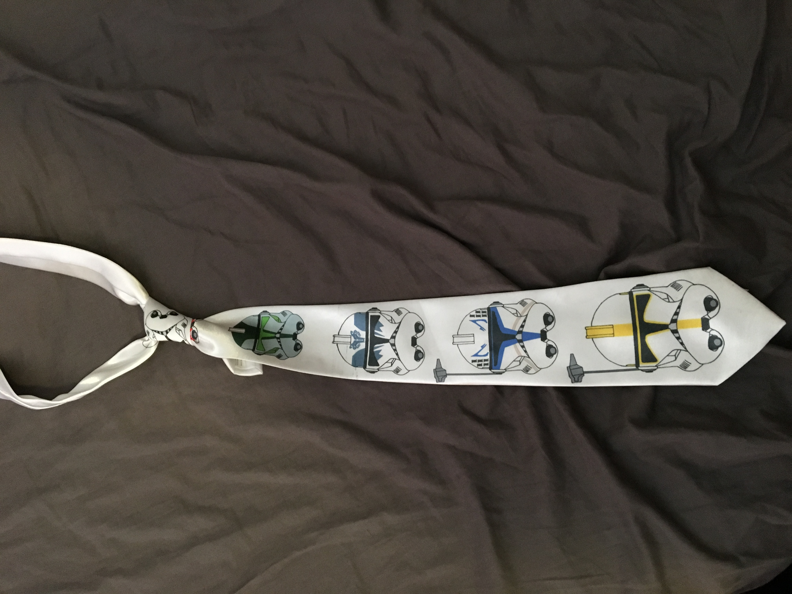

This is the shirt that I designed in photoshop and printed using the Brother GT-361 printer.

First, I iron pressed the shirt to make it flat allowing the GT-361 to better print the image

Next I loaded my design onto the printer, and printed my design.

Here is my final design!!!!
I don't have a picture yet.
I realized I couldn't use an image wih copyright images so I made another version of the shirt here without any copyrighted logos

This is my dye sublimination project that I designed in CorelDraw and loaded onto the Sawgrass 800 printer to print out. First, I designed my tie using the tie design template to ensure that the sizing was corect. Second, I printed out the paper template of my design, taped the image to the tie, and iron pressed the decal onto my tie using the same iron that I used for my t-shirt.

The advantage of using dye sublimination instead of UV printing is that you can put your template on a wider range of materials than simple t-shirts. You can press your design on cups, mugs, ties, shirts etc. in comparison to the limited capabilites of a UV printer.
